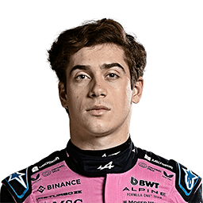
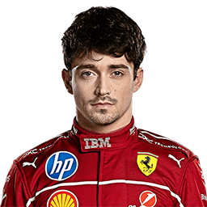
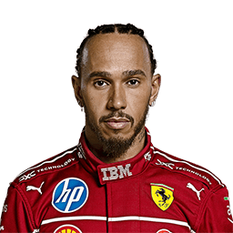
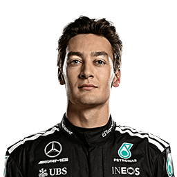
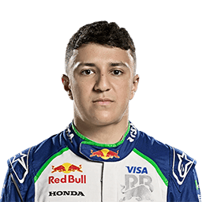
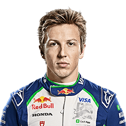
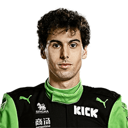
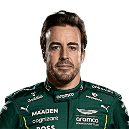
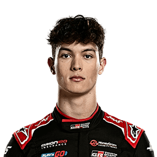

Pierre Gasly is a talented French Formula 1 driver racing for Alpine in 2025. Known for his consistency and mental toughness, he rebuilt his career after a difficult stint at Red Bull by winning the 2020 Italian Grand Prix with AlphaTauri — one of F1’s most emotional underdog victories. Now Alpine’s lead driver, Gasly combines smooth driving, strong technical feedback, and solid racecraft to keep the team competitive in the midfield. A former GP2 (Formula 2) Champion, he’s respected for his focus, resilience, and leadership within the team.
Franco Colapinto is a young Argentine Formula 1 driver racing for Alpine in 2025. After impressing in Formula 2 and serving as a Williams junior driver, he made his F1 debut mid-season — becoming Argentina’s first F1 driver in over 20 years. Known for his calm confidence, quick adaptability, and bold overtakes, Colapinto has quickly earned respect as one of the most promising rookies on the grid. His technical skill and maturity beyond his age make him a strong partner to Pierre Gasly as Alpine rebuilds for the future.

Oscar Piastri is a talented Australian Formula 1 driver racing for McLaren in 2025. A former F2 and F3 Champion, he is known for his precision, calmness under pressure, and ability to extract performance from any car. Since his impressive rookie debut in 2023, Piastri has earned podiums and established himself as one of F1’s most consistent young drivers. His composed racecraft and intelligence make him a perfect match for teammate Lando Norris, forming one of the strongest and most balanced pairings on the grid.

Lando Norris is a highly skilled British Formula 1 driver competing for McLaren in 2025. Since joining the team in 2019, he has grown into one of F1’s most popular and consistent performers, known for his smooth driving style, sharp racecraft, and quick one-lap pace. After several podiums and his first F1 victory in 2024, Norris is now regarded as one of the sport’s top-tier drivers and a key figure in McLaren’s return to front-running form. His strong partnership with Oscar Piastri blends experience, speed, and teamwork, making McLaren one of the most competitive teams on the grid.
Charles Leclerc is a world-class Formula 1 driver from Monaco, racing for Ferrari in 2025. Renowned for his exceptional qualifying speed, fearless overtakes, and deep loyalty to the Ferrari team, Leclerc has become the face of the Scuderia’s modern era. A five-time Grand Prix winner and constant title contender, Leclerc combines natural talent with precision and determination. His intense rivalry with teammate Carlos Sainz has pushed Ferrari forward, and in 2025, he remains one of F1’s most complete and respected drivers — a true contender whenever Ferrari delivers a competitive car.
Lewis Hamilton, a legendary British Formula 1 driver, races for Ferrari in 2025 after a historic career with Mercedes. A seven-time World Champion, Hamilton shares the record for the most titles in F1 history and holds numerous records for wins, poles, and podiums. Known for his smooth, calculated driving, unmatched racecraft, and relentless pursuit of excellence, Hamilton’s move to Ferrari marked one of the biggest shifts in modern F1. Beyond the track, he’s admired for his activism, leadership, and influence, making him one of the most iconic figures in the sport’s history.

Max Verstappen is a dominant Dutch Formula 1 driver racing for Red Bull Racing in 2025. A three-time World Champion, he’s known for his aggressive driving style, precision under pressure, and unmatched consistency. Since his record-breaking debut as F1’s youngest driver in 2015, Verstappen has redefined excellence in the modern era. With Red Bull’s powerful lineup and his fierce determination, he continues to set new standards for speed and control, often leading the pack with commanding performances and relentless focus.

Yuki Tsunoda is a fast and determined Japanese Formula 1 driver racing for Racing Bulls (RB) in 2025. Since debuting in 2021, he has developed from an emotional rookie into one of the most consistent and hard-working midfield drivers on the grid. Supported by Red Bull and Honda, Tsunoda is known for his fearless overtakes, sharp reactions, and strong race pace. His growth both on and off the track has made him a respected leader at RB, representing Japan proudly as one of F1’s standout young talents.
George Russell is a skilled British Formula 1 driver racing for Mercedes in 2025. Known for his precision, discipline, and strong qualifying pace, Russell has proven himself as one of the most complete drivers of the new generation. After years of development with Williams, he joined Mercedes in 2022 and quickly impressed — even taking his first Grand Prix victory that same year. Intelligent and analytical, Russell combines consistency with calm aggression, making him a vital part of Mercedes’ rebuilding phase alongside his former teammate and mentor, Lewis Hamilton.

Kimi Antonelli is a highly promising Italian Formula 1 driver racing for Mercedes in 2025. A rising star from the Mercedes junior program, he made his F1 debut at just 18 years old, becoming one of the youngest drivers in modern F1 history. Known for his raw speed, technical intelligence, and composure beyond his age, Antonelli dominated the junior categories, winning multiple championships before reaching F1. Seen as a potential future world champion, he represents the next generation of Mercedes talent and carries Italy’s hopes as one of its brightest new motorsport prodigies.

Alexander Albon is a Thai-British Formula 1 driver racing for Williams in 2025. After making his F1 debut in 2019 and spending time with Red Bull, Albon has rebuilt his career impressively, becoming the cornerstone of Williams’ revival. Known for his calm under pressure, smooth driving style, and ability to outperform his machinery, Albon has earned widespread respect as one of F1’s most consistent and intelligent racers. His leadership, experience, and optimism have made him both the heart and backbone of the Williams team.

Carlos Sainz is a Spanish Formula 1 driver racing for Stake F1 Team Kick Sauber in 2025 after several strong years with Ferrari. A race winner and one of the grid’s most complete all-rounders, Sainz is admired for his race intelligence, tire management, and consistency. Known as the “Smooth Operator,” he brings experience, technical insight, and calm precision to Sauber as the team transitions toward becoming Audi’s works outfit in 2026. His adaptability and steady performances make him a key figure in guiding the team’s next phase of growth.
Isack Hadjar is a young French Formula 1 driver competing for Racing Bulls (RB) in 2025. A standout member of the Red Bull Junior Team, he made his F1 debut after an impressive Formula 2 season where his speed and maturity caught the attention of top teams. Known for his aggressive yet controlled driving style, Hadjar has quickly adapted to the demands of Formula 1, showing confidence in wheel-to-wheel battles and strong race pace. As one of the sport’s most exciting rookies, he’s seen as a potential future Red Bull driver and a rising star in French motorsport.
Liam Lawson is a talented New Zealand Formula 1 driver racing for Red Bull Racing in 2025. After impressing as a reserve and substitute driver in previous seasons, Lawson earned a full-time seat, becoming the first Kiwi to race for Red Bull’s main team. Praised for his maturity, race intelligence, and adaptability, Lawson blends calm precision with fearless overtaking ability. His smooth transition into the championship-winning team highlights his potential to challenge even established stars, marking him as one of F1’s most promising young drivers.

Nico Hülkenberg is a veteran German Formula 1 driver racing for Haas in 2025. Known for his experience, technical skill, and consistency, he has been a steady presence on the grid since his debut in 2010. Though he has yet to secure a podium finish, Hülkenberg is respected for his qualifying speed, reliability, and deep understanding of car setup. As a team leader at Haas, he plays a crucial role in guiding development and mentoring younger drivers, continuing to prove his value as one of F1’s most dependable and professional racers.
Gabriel Bortoleto is a rising Brazilian Formula 1 driver racing for Stake F1 Team Kick Sauber in 2025. The 2023 FIA Formula 3 Champion, he quickly climbed the junior ranks with his smooth driving style, strong race awareness, and impressive adaptability. Making his F1 debut alongside Carlos Sainz, Bortoleto represents the next generation of Brazilian racing talent. His calm confidence, precision under pressure, and technical understanding make him one of the most exciting young additions to the grid as Sauber transitions toward its Audi era.
Fernando Alonso is a legendary Spanish Formula 1 driver racing for Aston Martin in 2025. A two-time World Champion (2005, 2006), he is celebrated for his exceptional racecraft, strategic brilliance, and relentless competitiveness across more than two decades in the sport. Still performing at a world-class level well into his 40s, Alonso remains a fierce competitor and a key force behind Aston Martin’s rise toward the front of the grid. His experience, adaptability, and determination continue to inspire fans and younger drivers alike, solidifying his status as one of F1’s all-time greats.

Lance Stroll is a Canadian Formula 1 driver competing for Aston Martin in 2025. Since his debut in 2017, he has built a reputation for his strong race starts, wet-weather skill, and resilience under pressure. A multiple-time podium finisher, Stroll continues to develop alongside veteran teammate Fernando Alonso, contributing to Aston Martin’s ongoing growth as a front-running team. With his experience, smooth driving style, and consistency, he remains a key part of the team’s long-term vision and one of F1’s most seasoned midfield drivers.

Esteban Ocon is a determined French Formula 1 driver racing for Haas in 2025 after several successful seasons with Alpine. A Grand Prix winner and known for his tenacity, precision, and defensive skill, Ocon has earned a reputation as one of the grid’s most reliable racers. Coming from humble beginnings, Ocon’s rise through the ranks reflects his persistence and work ethic. At Haas, he brings valuable experience and leadership, aiming to help the team climb back into the midfield fight while continuing to demonstrate the grit and consistency that define his career.
Oliver Bearman is a talented British Formula 1 driver racing for Haas in 2025. After an impressive one-off debut with Ferrari at the 2024 Saudi Arabian Grand Prix — where he finished seventh — Bearman quickly became one of the most talked-about young drivers in F1. A former Ferrari Academy member and Formula 2 race winner, Bearman is known for his composure, technical precision, and raw speed. As one of the youngest full-time drivers on the grid, he brings energy and long-term potential to Haas, representing the new generation of British racing talent.